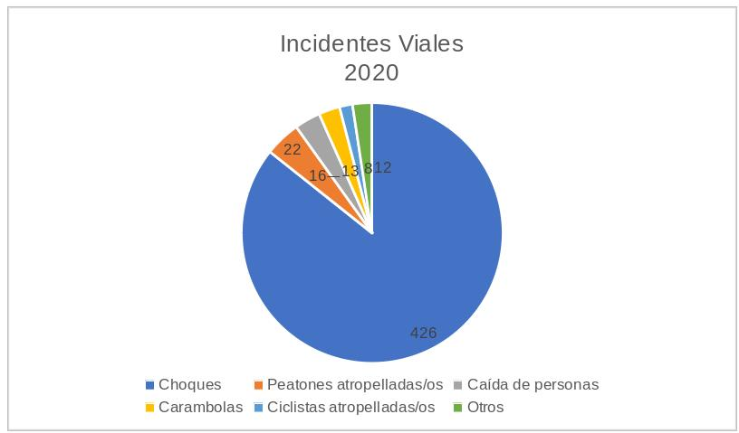

En un sentido estricto, la movilidad se entiende como los desplazamientos que efectuamos para trasladarnos a nuestras escuelas, trabajos, establecimientos de compra de bienes y servicios, y actividades de ocio, etcétera.
Es oportuno reconocer que un elemento intrínseco de la movilidad es el atributo de la accesibilidad, esto es, la posibilidad de que todas las personas puedan acceder y hacer uso del espacio público, sin que sus condiciones, máxime físicas, sean un impedimento para ello. Con ello, se garantiza el principio décimo, del artículo cuarto de la Ley General de Asentamientos Humanos, Ordenamiento Territorial y Desarrollo Urbano (LGAHOTDU) en la planeación y gestión de los asentamientos humanos y centros de población.
La movilidad tampoco puede comprenderse sin prestar atención a la seguridad vial. Su importancia es tal, que la Organización Panamericana de la Salud y la Organización de las Naciones Unidas promueven desde el 2011 el Decenio de Acción para la Seguridad Vial [ CITATION Orgsf \l 2058 ], y en 2015 emitieron la Declaración de Brasilia, que enmarca una serie de compromisos mundiales en esta materia [ CITATION Org15 \l 2058 ].
Así, la Organización Panamericana de la Salud define a la seguridad vial como “las medidas adoptadas para reducir el riesgo de lesiones y muertes causadas en el tránsito […] creando un ambiente más seguro, accesible y sostenible para los sistemas de transporte”. Enfatiza que deben construirse vías seguras especialmente para peatones, ciclistas y motociclistas[ CITATION Org15 \l 2058 ].
En este contexto resulta conveniente hacer notar que, como parte de su plan de trabajo, el Instituto Municipal de Planeación y Competitividad de Torreón coordina el desarrollo del Atlas de Riesgos de Torreón, en conjunto con Protección Civil y la participación de especialistas de la Consultoría Soluciones SIG.
En sazón, un componente de este instrumento, que permitirá responder de manera más eficaz a los potenciales riesgos detectados en caso de que logren materializarse, es el relativo a los Accidentes Terrestres, dentro del apartado de Identificación de Fenómenos Perturbadores en su sección Fenómenos Socio- organizativos.
Los primeros resultados arrojan que “los cruces más conflictivos coinciden con el más alto nivel de frecuencia de accidentes viales, principalmente desarrollados en el área del Centro y zona conurbada”. Pero esto no siempre ocurre, pues a pesar de que en zonas circundantes a la Unidad Deportiva también se concluye una importante cantidad de cruces de conflictos viales, esto no se traduce en accidentes.
El IMPLAN en su página web también ofrece una plataforma que facilita visualizar dónde ocurren los incidentes viales, cuántos han ocurrido y de qué tipo son. Por ejemplo, de enero a agosto de este año se han registrado 426 choques, 22 peatones han sido víctimas de un atropellamiento y 16 personas han sufrido caídas, 13 carambolas y 8 personas ciclistas atropelladas.

Laura Ballesteros, activista en movilidad, y ex Subsecretaria de Planeación en la Secretaría de Movilidad en Ciudad de México subraya que “los hechos de tránsito están entre las primeras causas de orfandad de discapacidad, temporal, permanente y tienen un impacto económico brutal”[ CITATION Art19 \l 2058 ].
Es destacable que los nuevos paradigmas en México y en el resto del orbe, impulsan una movilidad sostenible y, preferentemente, no motorizada. Su impacto no sólo se refleja en un fortalecimiento de la salud de las personas que optan por caminar o rodar en bicicleta, sino que los beneficios se extienden al ámbito medio ambiental, en primer término, con una mejora en la calidad del aire.
Así las cosas, las modificaciones constitucionales que el Congreso de la Unión ha efectuado en el último año, cobran especial relevancia. En diciembre del año 2019, las y los senadores de la LXIV legislatura, efectuaron una reforma que fue recibida con beneplácito por activistas y organizaciones civiles, la acción consistió en introducir a nuestra Carta Magna el derecho a una movilidad segura [ CITATION Art19 \l 2058 ].
En octubre de este año, las diputadas y diputados, en su función de cámara revisora, aprobaron por unanimidad esta modificación legal y, como parte del proceso legislativo, enviaron esta reforma para su aprobación a las legislaturas locales [ CITATION Chá20 \l 2058 ], esperando que lo hicieran por lo menos 17 congresos, lo que fue consumado a finales del mes pasado[ CITATION Mén20 \l 2058 ].
Al resultado de estas acciones, que configuran a la movilidad como un derecho constitucional, le queda pendiente la expedición de una Ley General en Movilidad y Seguridad Vial, lo que deberá realizarse en un período máximo de seis meses, en resumen, es probable que en los primeros meses del siguiente año se promulgue esta ley[ CITATION Fer20 \l 2058 ].
La importancia de este hecho no es menor; así, la influencia directa para los municipios será la asignación como facultad en la elaboración de planes en movilidad y seguridad vial. En un aspecto práctico, estos planes deberán contener programas y proyectos que, en conjugación con el ciclo presupuestario de la hacienda pública, deberán concretarse en beneficios tangibles para las personas.
Bibliografía
A. Á. (13 de diciembre de 2019). México reconoce como derecho constitucional la movilidad segura en las calles; ahora falta la ley. Obtenido de Animal Político: https://www.animalpolitico.com/2019/12/movilidad-senado-derecho-calles-seguras/
Chávez, V. (14 de octubre de 2020). Diputados aprueban reforma en materia de movilidad y seguridad vial. Obtenido de El Financiero: https://www.elfinanciero.com.mx/nacional/diputados-aprueban-reforma-en-materia-de-movilidad-y-seguridad-vial
F. D. (14 de octubre de 2020). Diputados aprueban derecho constitucional a la movilidad y seguridad vial. Obtenido de Milenio: https://www.milenio.com/politica/diputados-aprueban-derecho-constitucional-movilidad-seguridad
Instituto Municipal de Planeación y Competitividad de Torreón. (2020). Incidentes Viales 2020. Obtenido de IMPLAN: http://www.trcimplan.gob.mx/sig-mapas-torreon/incidentes-viales2020.html
Méndez, E. (30 de octubre de 2020). Presenta Segob resultados de Armonización Normativa en materia de Movilidad. Obtenido de Excélsior: https://www.excelsior.com.mx/nacional/presenta-segob-resultados-de-armonizacion-normativa-en-materia-de-movilidad/1414173
Organización de las Naciones Unidas. (noviembre de 2015). Acerca de Seguridad Vial. Obtenido de Organización Panamericana de la Salud: https://www.who.int/violence_injury_prevention/road_traffic/Final_Draft_Brasilia_declaration_ES.pdf?ua=1&ua=1
Organización Mundial de la Salud. (s.f.). Decenio de Acción para la Seguridad Vial 2011- 2020. Obtenido de Grupo de colaboración de las Naciones Unidas para la seguridad vial 2011- 2020: https://www.who.int/roadsafety/decade_of_action/es/